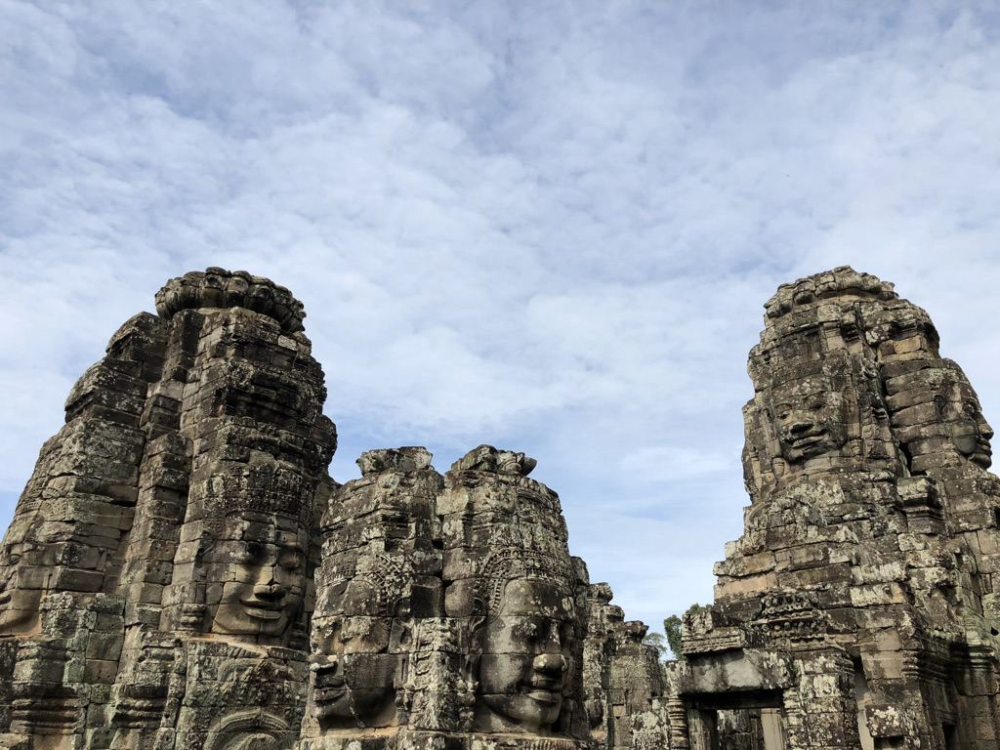

TRAVEL
旅の記録
写真アプリの中には、七百枚もの写真が一度の旅に詰まっていることがある。そのままにしておくと、旅はただの枚数になってしまう。だからときどき引き出しを開けて、何枚かを選び、短い文章を添えておくことにした。新しい旅から順に並べている。
 2026年9月19日〜23日
2026年9月19日〜23日南九州をひとまわり
鹿児島・熊本・天草・高千穂・指宿
鹿児島で息子と落ち合い、三人で九州の南半分をぐるりと一周した。イルカの背びれ、海辺の教会、峡谷の滝、そして山のような白くま。家族の旅は、少し欲張りなくらいでちょうどいい。
旅行記を読む → 2026年8月1日〜4日
2026年8月1日〜4日信州、夏の四日間
北杜・松本・美ヶ原・諏訪・上高地
妻と二人で、ひまわり畑から雲の上の牧場、梓川の碧まで。写真を見返すと、どの景色の中にも帽子をかぶった妻がいた。景色を撮るつもりで、僕はたぶん彼女を撮っていた。
旅行記を読む →
2018年8月5日〜10日石の顔と、茶色い川
カンボジア・シェムリアップ／ベトナム・ホーチミン
家族三人で、アンコールの遺跡とメコンの中洲へ。八百年微笑みつづける石の顔と、ミルクティー色の川。変わっていくのは、たぶん僕らのほうなのだろう。
旅行記を読む →